| Nama Mahasiswa | : | Farhan Aditya |
| NIM | : | 054750333 |
| Program Studi | : | Sistem Informasi |
| Fakultas | : | Sains dan Teknologi (FST) |
| Perguruan Tinggi | : | Universitas Terbuka |
Berdasarkan Entity Relationship Diagram (ERD) kasus rumah sakit, buatlah basis data MySQL/MariaDB pada XAMPP/Docker dengan tabel dokter, pasien, administrator, pasien_dokter, daftar, dan dokter_admin, lengkap dengan rincian atribut yang sesuai. Kegiatan praktik dilaporkan dalam rekaman video yang memuat: (a) perkenalan identitas mahasiswa, (b) langkah-langkah praktik beserta aktivitas mahasiswa (mencakup 17 langkah panduan praktikum), (c) hasil praktik, dan (d) kata penutup.
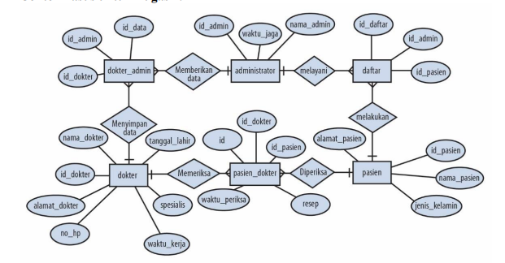
ERD kasus rumah sakit terdiri dari enam entitas utama. Setiap entitas dimodelkan ke dalam tabel basis data relasional dengan atribut kunci utama bertipe integer auto-increment serta relasi referensial antar tabel menggunakan kunci tamu (foreign key).
| Nama Tabel | Atribut | Tipe Data | Keterangan |
|---|---|---|---|
| administrator | id_admin |
INT(3) | Primary Key, AUTO_INCREMENT |
nama_admin |
VARCHAR(30) | Nama petugas administrasi | |
waktu_jaga |
VARCHAR(100) | Shift jadwal kerja petugas | |
| dokter | id_dokter |
INT(3) | Primary Key, AUTO_INCREMENT |
nama_dokter |
VARCHAR(30) | Nama dokter | |
alamat_dokter |
VARCHAR(100) | Alamat domisili dokter | |
tanggal_lahir |
DATE | Tanggal lahir dokter | |
no_hp |
VARCHAR(15) | Nomor telepon/kontak | |
spesialis |
VARCHAR(30) | Spesialisasi keahlian medis | |
waktu_kerja |
VARCHAR(100) | Jadwal praktik dokter | |
| pasien | id_pasien |
INT(3) | Primary Key, AUTO_INCREMENT |
nama_pasien |
VARCHAR(30) | Nama lengkap pasien | |
alamat_pasien |
VARCHAR(100) | Alamat domisili pasien | |
jenis_kelamin |
INT(1) | 1 = Laki-laki, 2 = Perempuan | |
| dokter_admin | id_data |
INT(3) | Primary Key, AUTO_INCREMENT |
id_dokter |
INT(3) | Foreign Key → dokter(id_dokter) | |
id_admin |
INT(3) | Foreign Key → administrator(id_admin) | |
| daftar | id_daftar |
INT(3) | Primary Key, AUTO_INCREMENT |
id_pasien |
INT(3) | Foreign Key → pasien(id_pasien) | |
id_admin |
INT(3) | Foreign Key → administrator(id_admin) | |
| pasien_dokter | id |
INT(3) | Primary Key, AUTO_INCREMENT |
id_dokter |
INT(3) | Foreign Key → dokter(id_dokter) | |
id_pasien |
INT(3) | Foreign Key → pasien(id_pasien) | |
waktu_periksa |
DATE | Tanggal pemeriksaan pasien | |
resep |
VARCHAR(100) | Rincian resep obat yang diberikan |
| Relasi pada ERD | Tabel Induk (PK) | Tabel Anak (FK) | Kardinalitas | Integritas Referensial |
|---|---|---|---|---|
| Memberikan data | administrator.id_admin | dokter_admin.id_admin | One-to-Many | ON DELETE CASCADE ON UPDATE CASCADE |
| Menyimpan data | dokter.id_dokter | dokter_admin.id_dokter | One-to-Many | ON DELETE CASCADE ON UPDATE CASCADE |
| Melayani | administrator.id_admin | daftar.id_admin | One-to-Many | ON DELETE CASCADE ON UPDATE CASCADE |
| Melakukan | pasien.id_pasien | daftar.id_pasien | One-to-Many | ON DELETE CASCADE ON UPDATE CASCADE |
| Memeriksa | dokter.id_dokter | pasien_dokter.id_dokter | One-to-Many | ON DELETE CASCADE ON UPDATE CASCADE |
| Diperiksa | pasien.id_pasien | pasien_dokter.id_pasien | One-to-Many | ON DELETE CASCADE ON UPDATE CASCADE |
Akses MySQL Monitor dilakukan melalui baris perintah antarmuka terminal/command prompt:
# Akses via Docker Container:
docker exec -it mysql_tugas2 mysql -u root -proot
# Atau via XAMPP (Windows Command Prompt):
cd C:\xampp\mysql\bin
mysql -u root -p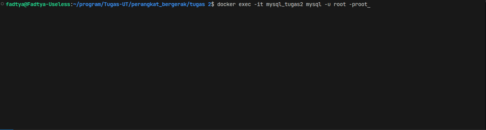
Menampilkan daftar basis data yang tersedia pada DBMS:
SHOW DATABASES;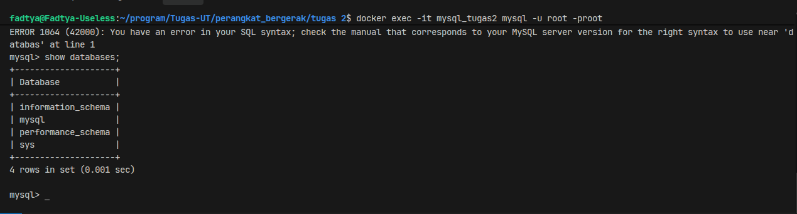
Akses antarmuka web phpMyAdmin dibuka melalui penjelajah web pada URL http://localhost:8080 (Docker) atau http://localhost/phpmyadmin (XAMPP). Dasbor phpMyAdmin menyediakan fungsi manajemen skema grafis, editor query SQL, serta visualisasi diagram relasi tabel.
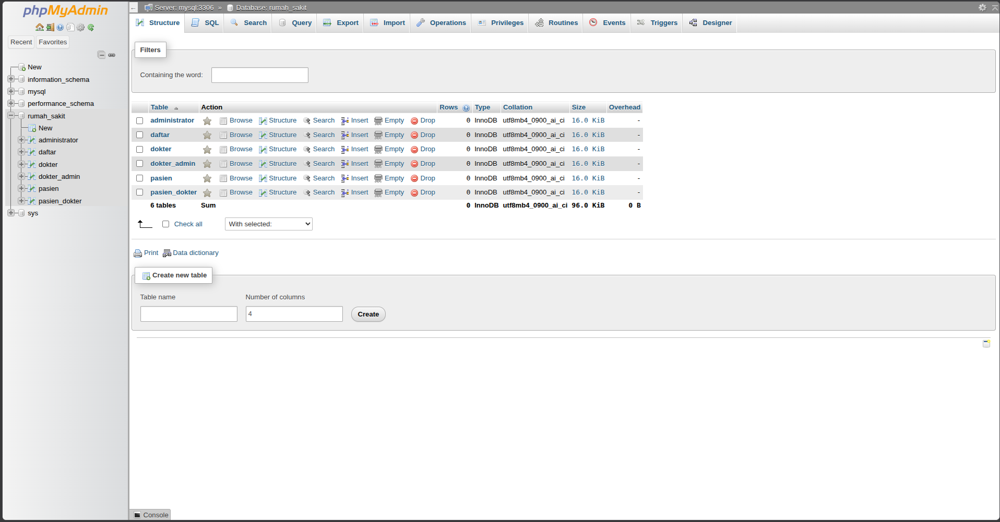
Pembuatan basis data utama praktikum dengan nama rumah_sakit menggunakan sintaks DDL:
CREATE DATABASE IF NOT EXISTS rumah_sakit;
SHOW DATABASES;
USE rumah_sakit;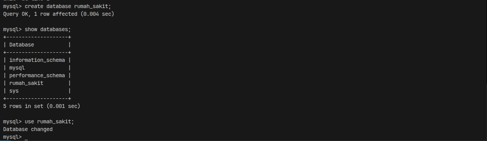
Perintah DROP DATABASE menghapus basis data beserta seluruh tabel dan rekaman data di dalamnya secara permanen. Pengujian dilakukan dengan membuat basis data sementara kemudian menghapusnya:
-- Membuat database pengujian sementara:
CREATE DATABASE IF NOT EXISTS db_temp_praktikum;
SHOW DATABASES;
-- Menghapus database pengujian sementara:
DROP DATABASE db_temp_praktikum;
SHOW DATABASES;
-- Kembali aktif ke basis data tugas utama:
USE rumah_sakit;Setelah dieksekusi, basis data db_temp_praktikum berhasil dihapus dan tidak lagi muncul pada daftar SHOW DATABASES.
Seluruh tabel dibuat berurutan dari tabel master induk tanpa foreign key, kemudian tabel transaksi anak yang memiliki foreign key.
CREATE TABLE IF NOT EXISTS administrator (
id_admin INT(3) PRIMARY KEY AUTO_INCREMENT,
nama_admin VARCHAR(30) NOT NULL,
waktu_jaga VARCHAR(100) NOT NULL
) ENGINE=InnoDB;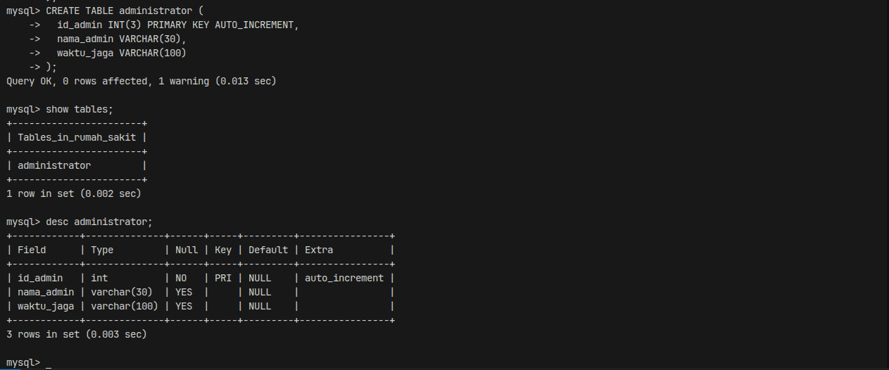
CREATE TABLE IF NOT EXISTS dokter (
id_dokter INT(3) PRIMARY KEY AUTO_INCREMENT,
nama_dokter VARCHAR(30) NOT NULL,
alamat_dokter VARCHAR(100) NOT NULL,
tanggal_lahir DATE NOT NULL,
no_hp VARCHAR(15) NOT NULL,
spesialis VARCHAR(30) NOT NULL,
waktu_kerja VARCHAR(100) NOT NULL
) ENGINE=InnoDB;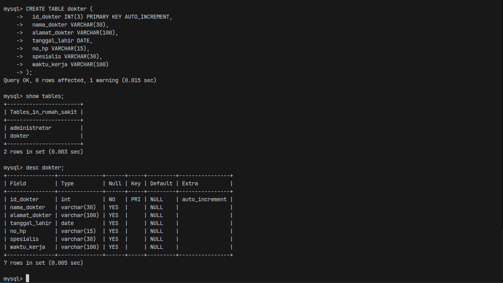
CREATE TABLE IF NOT EXISTS pasien (
id_pasien INT(3) PRIMARY KEY AUTO_INCREMENT,
nama_pasien VARCHAR(30) NOT NULL,
alamat_pasien VARCHAR(100) NOT NULL,
jenis_kelamin INT(1) NOT NULL
) ENGINE=InnoDB;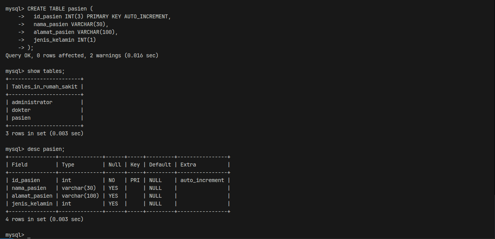
CREATE TABLE IF NOT EXISTS dokter_admin (
id_data INT(3) PRIMARY KEY AUTO_INCREMENT,
id_dokter INT(3) NOT NULL,
id_admin INT(3) NOT NULL
) ENGINE=InnoDB;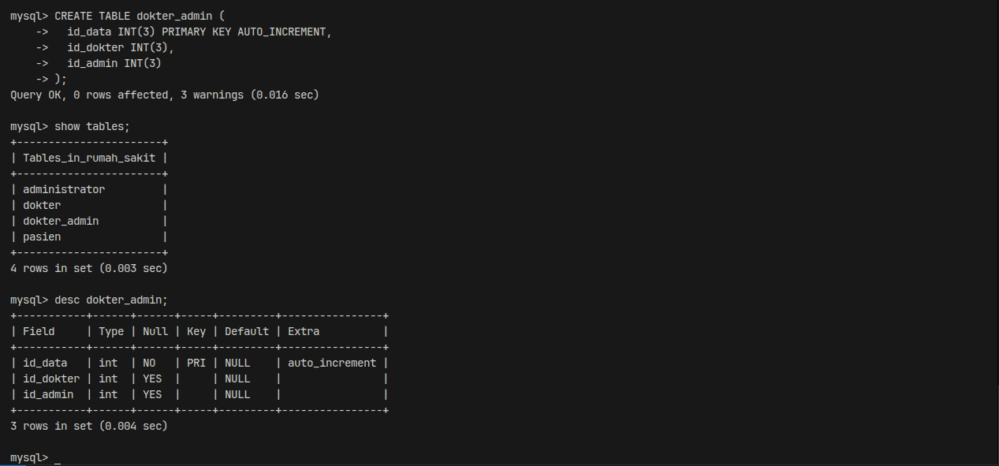
CREATE TABLE IF NOT EXISTS daftar (
id_daftar INT(3) PRIMARY KEY AUTO_INCREMENT,
id_pasien INT(3) NOT NULL,
id_admin INT(3) NOT NULL
) ENGINE=InnoDB;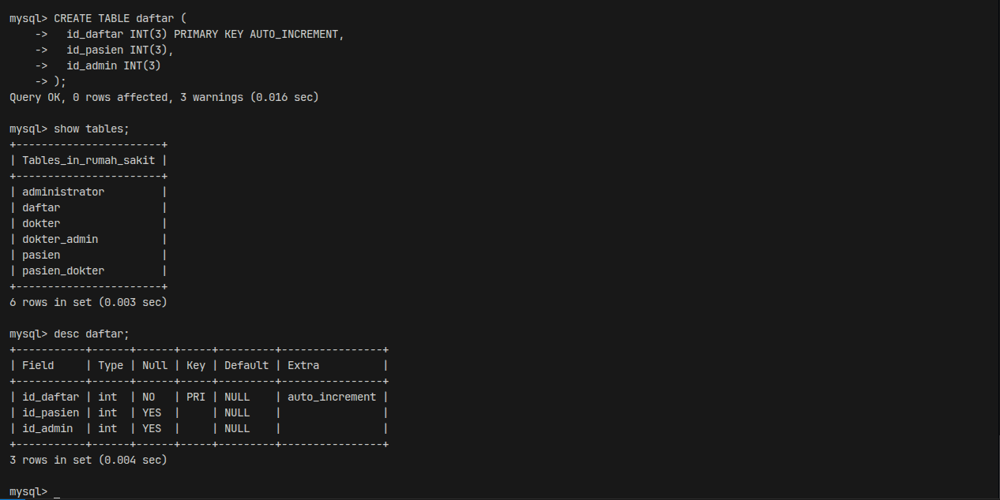
CREATE TABLE IF NOT EXISTS pasien_dokter (
id INT(3) PRIMARY KEY AUTO_INCREMENT,
id_dokter INT(3) NOT NULL,
id_pasien INT(3) NOT NULL,
waktu_periksa DATE NOT NULL,
resep VARCHAR(100) NOT NULL
) ENGINE=InnoDB;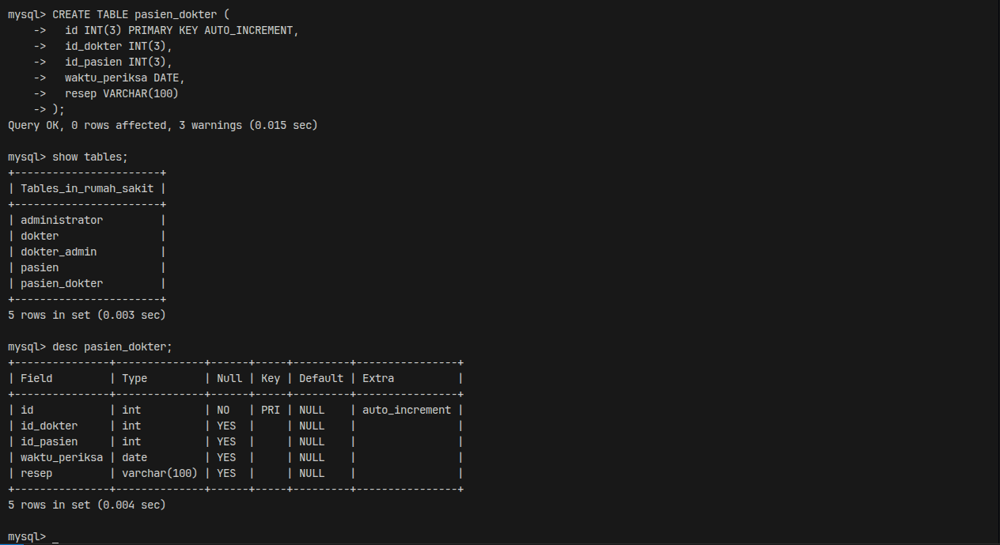
Verifikasi seluruh tabel yang telah terbentuk:
SHOW TABLES;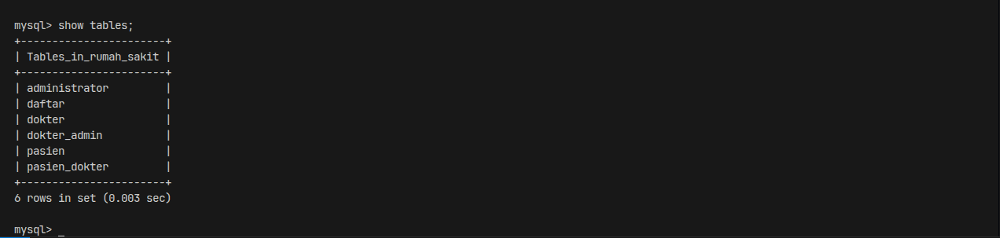
Kunci utama (Primary Key) telah didefinisikan saat tabel dibuat. Relasi antar tabel diatur menggunakan perintah ALTER TABLE dengan penegakan integritas referensial ON DELETE CASCADE ON UPDATE CASCADE:
-- 1. Relasi tabel dokter_admin
ALTER TABLE dokter_admin
ADD CONSTRAINT fk_dokter_admin_dokter FOREIGN KEY (id_dokter) REFERENCES dokter(id_dokter) ON DELETE CASCADE ON UPDATE CASCADE,
ADD CONSTRAINT fk_dokter_admin_admin FOREIGN KEY (id_admin) REFERENCES administrator(id_admin) ON DELETE CASCADE ON UPDATE CASCADE;
-- 2. Relasi tabel daftar
ALTER TABLE daftar
ADD CONSTRAINT fk_daftar_pasien FOREIGN KEY (id_pasien) REFERENCES pasien(id_pasien) ON DELETE CASCADE ON UPDATE CASCADE,
ADD CONSTRAINT fk_daftar_admin FOREIGN KEY (id_admin) REFERENCES administrator(id_admin) ON DELETE CASCADE ON UPDATE CASCADE;
-- 3. Relasi tabel pasien_dokter
ALTER TABLE pasien_dokter
ADD CONSTRAINT fk_pasien_dokter_dokter FOREIGN KEY (id_dokter) REFERENCES dokter(id_dokter) ON DELETE CASCADE ON UPDATE CASCADE,
ADD CONSTRAINT fk_pasien_dokter_pasien FOREIGN KEY (id_pasien) REFERENCES pasien(id_pasien) ON DELETE CASCADE ON UPDATE CASCADE;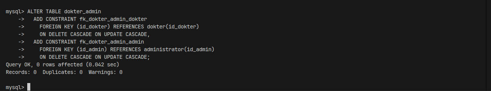
Verifikasi foreign key aktif pada katalog sistem information_schema:
SELECT TABLE_NAME, COLUMN_NAME, CONSTRAINT_NAME, REFERENCED_TABLE_NAME, REFERENCED_COLUMN_NAME
FROM information_schema.KEY_COLUMN_USAGE
WHERE TABLE_SCHEMA = 'rumah_sakit' AND REFERENCED_TABLE_NAME IS NOT NULL;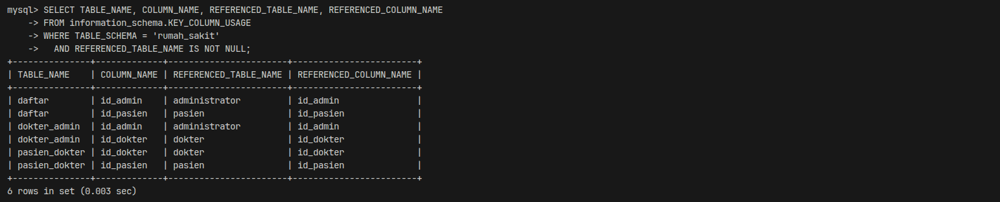
Pengisian data ke tabel dilakukan berurutan mulai dari tabel induk (master) lalu ke tabel relasi (anak):
-- Data administrator
INSERT INTO administrator (nama_admin, waktu_jaga) VALUES
('Siti Aminah', 'Senin-Jumat 08.00-16.00'),
('Ahmad Fauzi', 'Senin-Jumat 16.00-24.00'),
('Dewi Sartika', 'Sabtu-Minggu 08.00-20.00');
-- Data dokter
INSERT INTO dokter (nama_dokter, alamat_dokter, tanggal_lahir, no_hp, spesialis, waktu_kerja) VALUES
('Budi Harmoko', 'Jl. Melati No. 1 Jakarta', '1982-04-12', '081234567890', 'Umum', 'Senin-Rabu 09.00-14.00'),
('Indah Permata', 'Jl. Sudirman No. 45 Jakarta', '1988-09-20', '081298765432', 'Penyakit Dalam', 'Kamis-Sabtu 10.00-16.00'),
('Hendra Wijaya', 'Jl. Dahlia No. 12 Bogor', '1979-11-05', '081311223344', 'Anak', 'Senin-Jumat 08.00-12.00'),
('Siti Rahma', 'Jl. Mawar No. 7 Depok', '1990-01-15', '081377889900', 'Penyakit Dalam', 'Selasa-Kamis 13.00-18.00');
-- Data pasien
INSERT INTO pasien (nama_pasien, alamat_pasien, jenis_kelamin) VALUES
('Andi Pratama', 'Jl. Mawar No. 5 Bekasi', 1),
('Rina Marlina', 'Jl. Anggrek No. 10 Jakarta', 2),
('Bambang Pamungkas', 'Jl. Kenanga No. 8 Tangerang', 1),
('Siti Nurhaliza', 'Jl. Melati No. 3 Jakarta', 2),
('Dedi Kurniawan', 'Jl. Cendana No. 15 Bogor', 1);
-- Data transaksi & relasi
INSERT INTO dokter_admin (id_dokter, id_admin) VALUES (1, 1), (2, 1), (3, 2), (4, 3);
INSERT INTO daftar (id_pasien, id_admin) VALUES (1, 1), (2, 1), (3, 2), (4, 2), (5, 3);
INSERT INTO pasien_dokter (id_dokter, id_pasien, waktu_periksa, resep) VALUES
(1, 1, '2026-10-10', 'RSP-001 Paracetamol 500mg, Amoxicillin'),
(2, 2, '2026-10-12', 'RSP-002 Omeprazole 20mg, Antasida'),
(3, 1, '2026-10-15', 'RSP-003 Vitamin C, Ibuprofen'),
(1, 3, '2026-10-18', 'RSP-004 Sirup Paracetamol, Cetirizine'),
(2, 4, '2026-10-20', 'RSP-005 Metformin 500mg'),
(4, 5, '2026-10-22', 'RSP-006 Ranitidine 150mg');Perintah SELECT mengambil data seluruh kolom maupun kolom spesifik dengan alias (AS):
-- Menampilkan seluruh kolom tabel dokter:
SELECT * FROM dokter;
-- Menampilkan kolom terpilih dari tabel pasien dengan alias:
SELECT
id_pasien AS 'ID Pasien',
nama_pasien AS 'Nama Lengkap Pasien',
alamat_pasien AS 'Alamat Domisili'
FROM pasien;Klausa WHERE memfilter data berdasarkan kondisi tertentu:
-- Dokter spesialis Penyakit Dalam:
SELECT id_dokter, nama_dokter, spesialis, no_hp
FROM dokter
WHERE spesialis = 'Penyakit Dalam';
-- Pasien berjenis kelamin perempuan (2):
SELECT id_pasien, nama_pasien, alamat_pasien
FROM pasien
WHERE jenis_kelamin = 2;
-- Pemeriksaan oleh dokter 1 setelah tanggal 12 Oktober:
SELECT id, id_dokter, id_pasien, waktu_periksa, resep
FROM pasien_dokter
WHERE id_dokter = 1 AND waktu_periksa >= '2026-10-12';Operasi JOIN menggabungkan data antar tabel berdasarkan relasi foreign key:
-- INNER JOIN 3 tabel (Pasien, Riwayat Pemeriksaan, Dokter):
SELECT
pd.id AS no_pemeriksaan,
p.nama_pasien,
d.nama_dokter,
d.spesialis,
pd.waktu_periksa,
pd.resep
FROM pasien_dokter pd
JOIN pasien p ON pd.id_pasien = p.id_pasien
JOIN dokter d ON pd.id_dokter = d.id_dokter;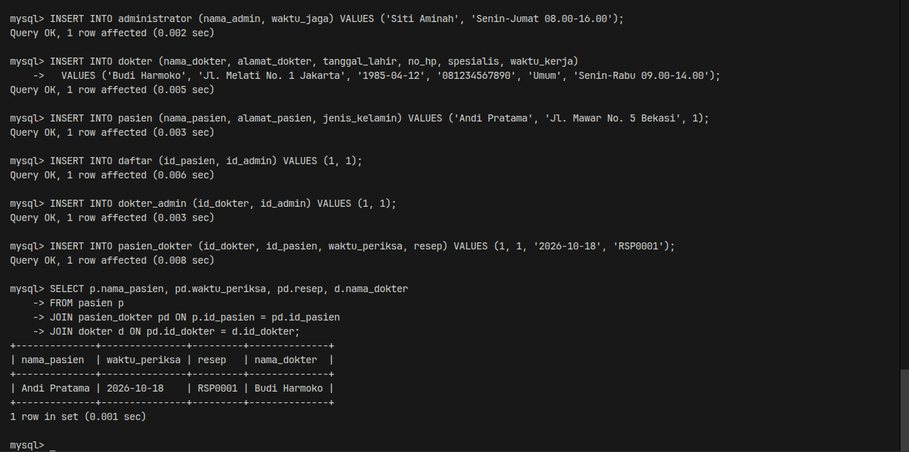
Menggunakan fungsi matematika dan agregasi bawaan (COUNT, AVG, ROUND, MIN, MAX, TIMESTAMPDIFF):
-- Menghitung total data:
SELECT
(SELECT COUNT(*) FROM dokter) AS total_dokter,
(SELECT COUNT(*) FROM pasien) AS total_pasien,
(SELECT COUNT(*) FROM administrator) AS total_admin,
(SELECT COUNT(*) FROM pasien_dokter) AS total_pemeriksaan;
-- Menghitung rata-rata usia dokter dan usia termuda/tertua:
SELECT
ROUND(AVG(TIMESTAMPDIFF(YEAR, tanggal_lahir, '2026-11-01')), 1) AS rata_rata_usia_dokter,
MIN(tanggal_lahir) AS tgl_lahir_dokter_tertua,
MAX(tanggal_lahir) AS tgl_lahir_dokter_termuda
FROM dokter;Fungsi string (CONCAT, UPPER, LOWER, LENGTH, SUBSTRING) memanipulasi teks:
-- Menggabungkan gelar dan spesialisasi dokter:
SELECT CONCAT('dr. ', nama_dokter, ' (Spesialis ', spesialis, ')') AS profil_dokter FROM dokter;
-- Standarisasi teks kapital dan kecil:
SELECT UPPER(nama_pasien) AS nama_kapital, LOWER(alamat_pasien) AS alamat_huruf_kecil FROM pasien;
-- Menghitung panjang karakter dan mengekstrak kode resep:
SELECT nama_pasien, LENGTH(nama_pasien) AS panjang_karakter FROM pasien;
SELECT id, resep, SUBSTRING(resep, 1, 7) AS kode_resep, SUBSTRING(resep, 9) AS rincian_obat FROM pasien_dokter;Operator BETWEEN menyeleksi data dalam interval rentang nilai:
-- Dokter dengan rentang tanggal lahir tahun 1980 sampai 1989:
SELECT nama_dokter, spesialis, tanggal_lahir
FROM dokter
WHERE tanggal_lahir BETWEEN '1980-01-01' AND '1989-12-31';
-- Pemeriksaan dalam rentang tanggal 10 Oktober s.d. 18 Oktober 2026:
SELECT id, id_pasien, waktu_periksa, resep
FROM pasien_dokter
WHERE waktu_periksa BETWEEN '2026-10-10' AND '2026-10-18';Pencarian pola teks dengan wildcard %:
-- Nama pasien berawalan huruf 'S':
SELECT id_pasien, nama_pasien, alamat_pasien FROM pasien WHERE nama_pasien LIKE 'S%';
-- Nama dokter berakhiran kata 'Wijaya':
SELECT id_dokter, nama_dokter, spesialis FROM dokter WHERE nama_dokter LIKE '%Wijaya';
-- Dokter dengan alamat domisili di Jakarta:
SELECT id_dokter, nama_dokter, alamat_dokter FROM dokter WHERE alamat_dokter LIKE '%Jakarta%';Pengurutan data secara menaik (ASC) atau menurun (DESC):
-- Ascending (A-Z) berdasarkan nama pasien:
SELECT * FROM pasien ORDER BY nama_pasien ASC;
-- Descending (termuda ke tertua) berdasarkan tanggal lahir dokter:
SELECT nama_dokter, tanggal_lahir, spesialis FROM dokter ORDER BY tanggal_lahir DESC;
-- Multi-kolom:
SELECT id, waktu_periksa, id_dokter, id_pasien, resep FROM pasien_dokter ORDER BY waktu_periksa DESC, id_dokter ASC;Pengelompokan data dengan agregasi dan klausa HAVING:
-- Jumlah pasien berdasarkan jenis kelamin:
SELECT
CASE jenis_kelamin WHEN 1 THEN 'Laki-laki' ELSE 'Perempuan' END AS jenis_kelamin,
COUNT(*) AS total_pasien
FROM pasien
GROUP BY jenis_kelamin;
-- Jumlah pemeriksaan per dokter dengan HAVING:
SELECT d.nama_dokter, COUNT(pd.id) AS total_pemeriksaan
FROM dokter d
JOIN pasien_dokter pd ON d.id_dokter = pd.id_dokter
GROUP BY d.id_dokter, d.nama_dokter
HAVING COUNT(pd.id) >= 2;Pembaruan data dan verifikasi hasil perubahannya:
-- Memperbarui kontak dan jam kerja dokter spesialis (id_dokter = 1):
UPDATE dokter
SET no_hp = '081299998888', waktu_kerja = 'Senin-Jumat 08.00-15.00'
WHERE id_dokter = 1;
SELECT id_dokter, nama_dokter, no_hp, waktu_kerja FROM dokter WHERE id_dokter = 1;
-- Memperbarui domisili pasien (id_pasien = 1):
UPDATE pasien
SET alamat_pasien = 'Jl. Boulevard Raya No. 88 Bekasi Barat'
WHERE id_pasien = 1;
SELECT id_pasien, nama_pasien, alamat_pasien FROM pasien WHERE id_pasien = 1;
-- Memperbarui resep obat (id = 1):
UPDATE pasien_dokter
SET resep = 'RSP-001 Paracetamol 500mg, Amoxicillin 500mg, Vitamin B Complex'
WHERE id = 1;
SELECT id, id_pasien, waktu_periksa, resep FROM pasien_dokter WHERE id = 1;Hasil akhir praktikum adalah basis data rumah_sakit yang memuat enam tabel relasional yang saling terhubung secara utuh sesuai dengan spesifikasi ERD kasus rumah sakit:
| No | Nama Tabel | Kunci Utama (PK) | Kunci Tamu (FK) | Tabel Rujukan Induk |
|---|---|---|---|---|
| 1 | administrator |
id_admin |
– | – |
| 2 | dokter |
id_dokter |
– | – |
| 3 | pasien |
id_pasien |
– | – |
| 4 | dokter_admin |
id_data |
id_dokter, id_admin |
dokter, administrator |
| 5 | daftar |
id_daftar |
id_pasien, id_admin |
pasien, administrator |
| 6 | pasien_dokter |
id |
id_dokter, id_pasien |
dokter, pasien |
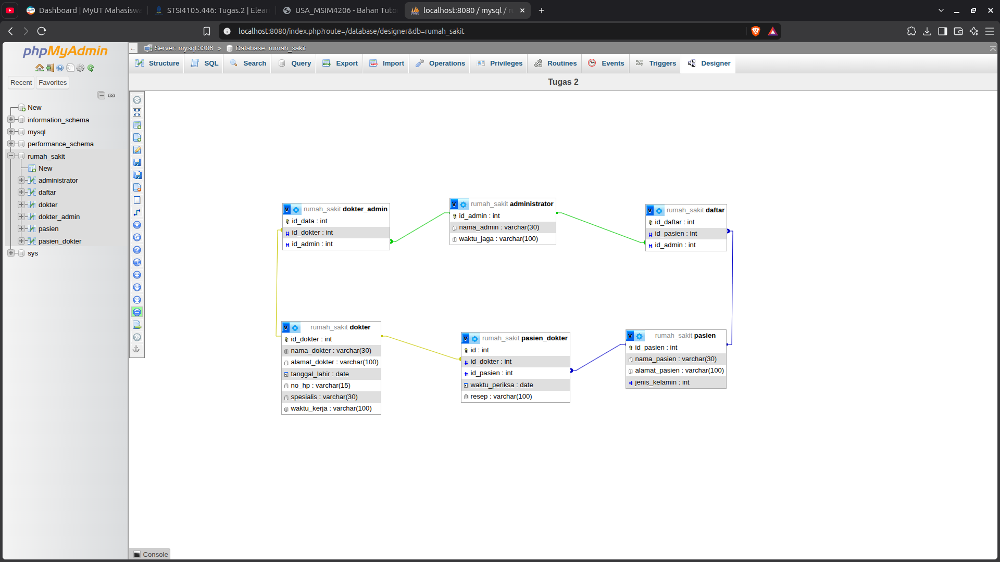
Seluruh 17 instruksi panduan praktikum—meliputi akses CLI/Web UI, DDL (CREATE, ALTER, DROP), DML (INSERT, UPDATE), manipulasi kueri (SELECT, WHERE, JOIN, BETWEEN, LIKE, ORDER BY, GROUP BY, HAVING), serta pemanfaatan fungsi bawaan matematika dan string—telah tervalidasi berjalan tanpa galat pada mesin MySQL InnoDB.